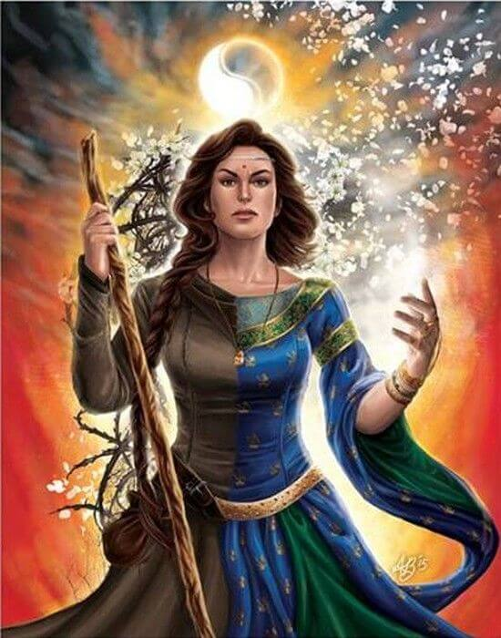

el' Nynaeve ti al'Meara Mandragoran
Queen of Malkier and Yellow Ajah
Queen of Malkier and Yellow Ajah
Healer with a passion for learning and strong leadership skills. Raised in the Two Rivers learning woodscraft at a young age, I was apprenticed to the local Wisdom where I began my passion for the healing arts. I left for the White Tower in my young twenties as a Wilder following my own apprentice when a Blue sister came into town meddleing.